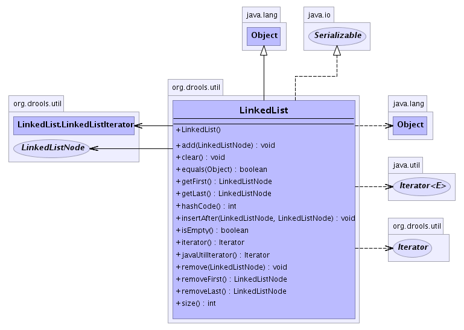

so that it references
the node before and after it. This way a node can be removed without having to scan the list to find it. This class
does not provide an Iterator implementation as its designed for efficiency and not genericity. There are a number of
ways to iterate the list.
Simple iterator:
for ( LinkedListNode node = list.getFirst(); node != null; node = node.getNext() ) {
}
Iterator that pops the first entry:
for ( LinkedListNode node = list.removeFirst(); node != null; node = list.removeFirst() ) {
}
- See Also:
- Serialized Form
-
- 
|
Constructor Summary |
LinkedList()
Construct an empty LinkedList |
| Methods inherited from class java.lang.Object |
clone, finalize, getClass, notify, notifyAll, toString, wait, wait, wait |
LinkedList
public LinkedList()
- Construct an empty
LinkedList
add
public void add(LinkedListNode node)
- Add a
LinkedListNode to the list. If the LinkedList is empty then the first and
last nodes are set to the added node.
- Parameters:
node - The LinkedListNode to be added
remove
public void remove(LinkedListNode node)
- Removes a
LinkedListNode from the list. This works by attach the previous reference to the child reference.
When the node to be removed is the first node it calls removeFirst(). When the node to be removed is the last node
it calls removeLast().
- Parameters:
node - The LinkedListNode to be removed.
getFirst
public final LinkedListNode getFirst()
- Return the first node in the list
- Returns:
- The first
LinkedListNode.
getLast
public final LinkedListNode getLast()
- Return the last node in the list
- Returns:
- The last
LinkedListNode.
removeFirst
public LinkedListNode removeFirst()
- Remove the first node from the list. The next node then becomes the first node. If this is the last
node then both first and last node references are set to null.
- Returns:
- The first
LinkedListNode.
insertAfter
public void insertAfter(LinkedListNode existingNode,
LinkedListNode newNode)
removeLast
public LinkedListNode removeLast()
- Remove the last node from the list. The previous node then becomes the last node. If this is the last
node then both first and last node references are set to null.
- Returns:
- The first
LinkedListNode.
isEmpty
public final boolean isEmpty()
- Returns:
- boolean value indicating the empty status of the list
clear
public void clear()
- Iterates the list removing all the nodes until there are no more nodes to remove.
size
public final int size()
- Returns:
- return size of the list as an int
hashCode
public int hashCode()
- Overrides:
hashCode in class java.lang.Object
equals
public boolean equals(java.lang.Object object)
- Overrides:
equals in class java.lang.Object
iterator
public Iterator iterator()
javaUtilIterator
public java.util.Iterator javaUtilIterator()
 org.drools.util.LinkedList
org.drools.util.LinkedList